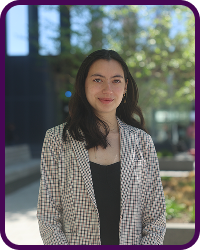
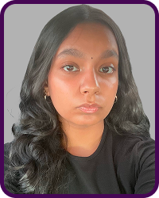
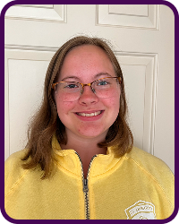
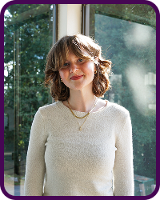
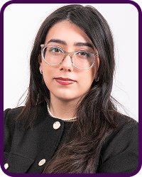

A 4-month program empowering high school and college students to understand research on screens and advocate for better screen policies in their community. Applications for the Fall 2026 cohort are now open and will close on August 26 at 11:59pm PST.





We are looking for young people passionate about improving screen use in their community. We aren’t looking for people with experience in science; we’re looking for people who want to get involved in their community.
The fellowship meets every other week, along with individual meetings. Over the course of four months, fellows will learn how to study policy, along with implementing advocacy campaigns in their community.
Cohort members are expected to dedicate 3 to 5 hours a week on the fellowship and action project. Cohort members are expected to attend every meeting every other week.
The next fellowship cohort will be in Fall 2026.